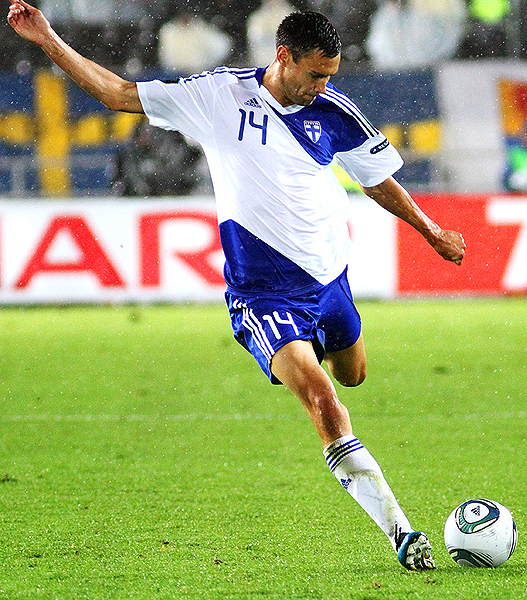

Niin sosiaalisen kuin perinteisenkin median puolella esitetään usein karkean virheellisiä väitteitä tilastotieteeseen ja todennäköisyyslaskentaan liittyen. Alkaneen vuoden kunniaksi Tyyppiarvo alkaa julkaista uutta Tyyppiarvo korjaa! -palstaa, joka pureutuu julkisuudessa esitettyihin virheellisiin tilasto- ja todennäköisyysväitteisiin ja kertoo, miten ongelma olisi oikeasti pitänyt ratkaista. Palstan ensimmäinen aihe on todennäköisyyslaskenta, tarkemmin jalkapallojuniorin todennäköisyys päätyä maajoukkueen kapteeniksi.
Kuvakaappaus Aleksi Valavuoren Twitter-tililtä.
Aleksi Valavuori esitti 20. tammikuuta Twitter-tilillään laskelman, jonka mukaan Tim Sparvin ura on yksi miljoonasta, koska vain yksi miljoonasta suomalaisesta jalkapalloa harrastavasta juniorista päätyy maajoukkueen kapteeniksi. Vaikka Valavuori tarjosi laskuilleen tueksi kovaa matematiikkaa (1/10 000 * 1/100 = 1/1 000 000), on väitettä syytä tarkastella kriittisesti. Aloitetaan ajatusleikillä, jossa yksittäinen suomalainen päätyy jalkapallomaajoukkueen kapteeniksi todennäköisyydellä 1/1 000 000. Yhden ikäluokan koko Suomessa on noin 60 000 ihmistä (nykyään oikeastaan lähempänä 50 000), ja karkeasti pyöristettynä puolet lapsista on poikia ja puolet tyttöjä. Näin ollen miljoonan suomalaisen pojan ja miljoonan suomalaisen tytön syntymiseen kuluu noin 33 vuotta (1 000 000/30 000 = 33.33). Tämä tarkoittaisi sitä, että naisten ja miesten maajoukkueeseen syntyy uusi kapteeni noin 33 vuoden välein, eli maajoukkueen kapteeni vaihtuisi keskimäärin 33 vuoden välein, mikä lupaisi pitkää uraa tällä hetkellä 31-vuotiaalle Sparville. Jos mukaan laskettaisiin kaikkien suomalaisten sijaan pelkästään jalkapalloa harrastavat (kuten alkuperäisessä arviossa), vaihtuisi kapteeni vielä paljon harvemmin ja Sparvkin saisi todennäköisesti jatkaa asemassaan yli satavuotiaaksi.

Tim Sparv. Kuva: Wikimedia Commons.
Miten todennäköisyys jalkapallojuniorin päätymiselle maajoukkueen kapteeniksi sitten pitäisi laskea? Paras arvio saataisiin jakamalla pitkän aikavälin aineistosta maajoukkuekapteeneiksi päätyneiden pelaajien lukumäärä kaikkien samana aikana jalkapalloa harrastaneiden pelaajien määrällä. Tyyppiarvo ei valitettavasti saanut käsiinsä tällaisia aineistoja, mutta suuntaa-antavaa todennäköisyyttä voidaan arvioida seuraavasti: valitaan tietty määrä ikäluokkia, ja tarkastellaan näiden ikäluokkien sisällä, kuinka moni pelaa tai on pelannut jalkapalloa ja kuinka moni on päätynyt jalkapallomaajoukkueen kapteeniksi. Esimerkiksi jakamalla tällä hetkellä 31-40 vuotiaiden Suomen jalkapallomaajoukkueen kapteenina toimivien tai toimineiden henkilöiden lukumäärän 11-20-vuotiaiden jalkapalloa pelaavien tai pelanneiden määrällä, saamme arvion maajoukkueen kapteeniksi päätymisen todennäköisyydelle. 31-40-vuoden ikä on valittu, koska oletetusti tämän ikäinen jalkapalloilija on jo päätynyt kapteeniksi, mikäli hänestä ikinä sellainen tulisi.
30-40-vuotiaita nykyisiä tai entisiä maajoukkuekapteeneita ovat Tyyppiarvon tietojen mukaan ainakin Tim Sparv, Petri Pasanen, Niklas Moisander, Perparim Hetemaj, Tinja-Riikka Korpela ja Maija Saari. 10 vuoden sisällä syntyneiden kapteenien lukumäärä on siis ainakin 6. 10 vuoden sisällä syntyneiden jalkapalloa pelanneiden/pelaavien lukumäärän arviointi on vaikeampaa. Emme löytäneet suoraa tilastoa aiheesta, joten tyydymme esittämään jonkinlaisen ylärajan 11-20-vuotiaiden pelaajien lukumäärästä. Palloliiton mukaan Suomessa on tällä hetkellä noin 140 000 rekisteröitynyttä pelaajaa. Luvusta puuttuvat ne 11-20-vuotiaat, jotka eivät vielä ole aloittaneet jalkapalloa ja toisaalta ne, jotka ovat sen jo lopettaneet. Sen sijaan lukuun sisältyvät kaikki 11 vuotta nuoremmat ja 20 vuotta vanhemmat pelaajat, joiden lukumäärän voidaan olettaa kattavan puuttuvien ex- ja tulevien pelaajien lukumäärän moninkertaisesti. Näin ollen voidaan arvioida 10 vuoden sisällä syntyvän korkeintaan 140 000 jalkapalloilijaa, jolloin alaraja maajoukkuekapteeniksi päätymisen todennäköisyydelle olisi 6/140 000 eli noin 1/25 000, mikä on 40 kertaa korkeampi, kuin alkuperäinen väite yksi miljoonasta. Myös Tyyppiarvon arviossa on epävarmuutta, sillä esitetyt luvut ovat hyvin karkeita, mutta melko turvallisin mielin voidaan todeta, ettei maajoukkuekapteeniksi päätymisen todennäköisyys ainakaan ole pienempi kuin 1/25 000.
Lopuksi Tyyppiarvo muistuttaa, että vaikka Tim Sparvin ura ei olekaan aivan ”yksi miljoonasta”, on kyseessä ainutlaatuinen urheilija, joka on yltänyt Suomen mittapuulla hyvin harvinaisiin saavutuksiin. Tyyppiarvo toivottaa Sparville onnea ja menestystä niin seurajoukkueessaan FC Midtjyllandissa kuin tottakai myös Suomen A-maajoukkueessa!